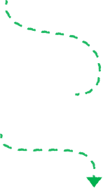
Swipe for some surprising facts (and how you're helping).
Every ฿1 or ฿2 from your Grab ride or order goes towards projects that
help Mother Nature.
Here's what happens when you opt in to our Green Programme:
Turn your small change into big changes for the planet
 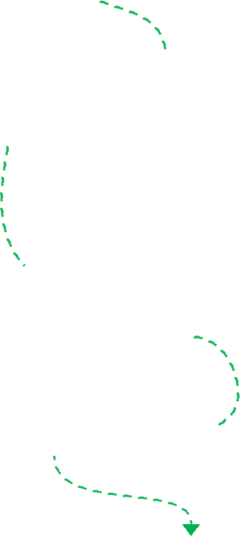
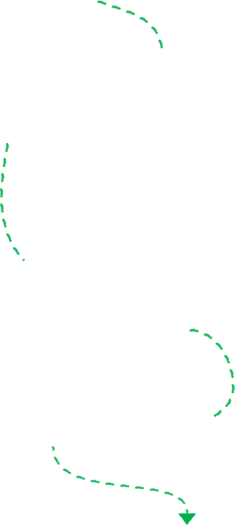
Your support for the
Biochar Life programme
helps fight air pollution in Thailand, by turning agricultural
waste into biochar, a carbon-locking charcoal that also enriches
soil and supports farmers.
You'll also be backing another local effort, the Wongphai Biochar,
which uses bamboo offcuts instead. Wow.
Did you know?
Bangkok's air was unsafe to breathe for over 200 days last year
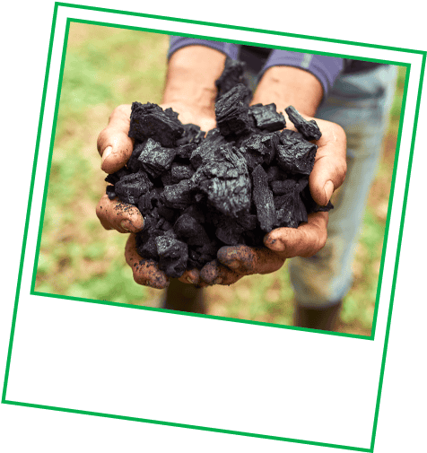
Biochar
helps local farmers lock
away harmful carbon emissions
during burning. (Go, biochar!)
 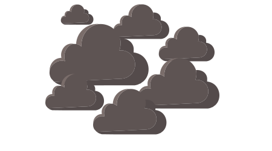
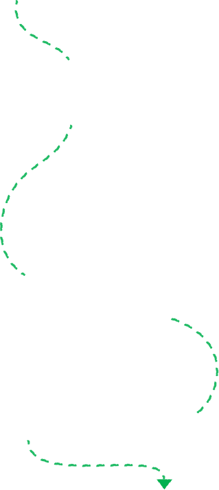
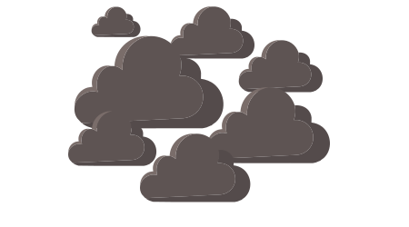
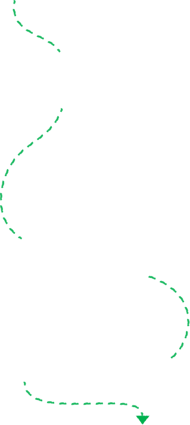
The
GrabForGood Forest
programme has been fighting back by planting more trees in
Krabi’s Koh Lanta district.
As trees like these help restore biodiversity, your support allows
us to work with
EcoMatcher
and
Conserve Natural Forest
to plant even more!
Did you know?
Every minute, we lose a forest the size of 10 football fields
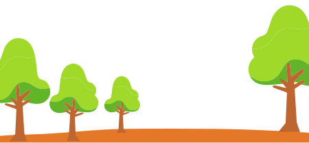
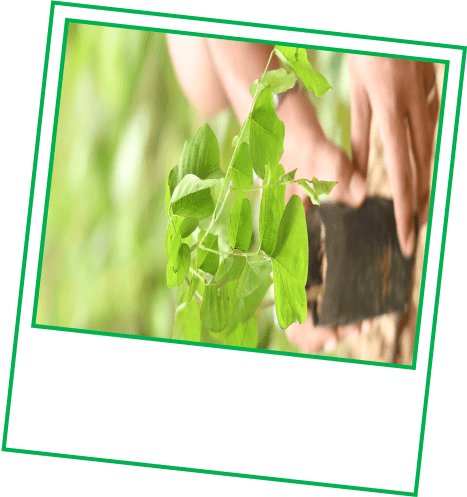
Prized by illegal loggers,
Thai Rosewood is now
critically
endangered.
(Not cool.)
And that's not all. You're also making a change about 700km away.
The Green Programme supports the Wildlife Conservation Society in
safeguarding Cambodia's
Keo Seima Wildlife Sanctuary,
which protects over 80 threatened species and their habitats from
the harmful effects of deforestation.
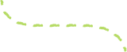
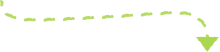
Can you guess how many trees have been contributed so far?
Goes to show how small change can grow into something big, huh? Tap
here to opt in to
Green Programme,
if you haven't yet.
Quick quiz.
Since 2021, Grab users like you have been championing forest
conservation across Southeast Asia.
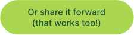

Source:
Save the Children International
World Resources Institute